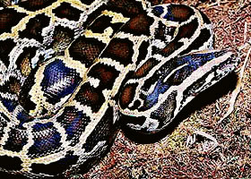

Питон
 Питоны (латинское название «Pythonini») — подсемейство змей семейства ложноногих (Boidae). Различают 8 родов с 30 видами, встречающиеся в Южной Азии, Африке и Австралии.
Признаки
Род питонов имеет следующие особенности строения тела: щитки только на передней половине верхней части головы, ноздри между двумя неодинаковыми щитками. Чешуйки тела без киля. Из 7 видов питонов 4 обитают в тропической Африке, 3 обитают в южной Азии.
Тигровый питон (латинское название «Pythonini molurus tigris») до 6 метров длиной. Голова кроваво-красная, темя, лоб и спина светло-бурые, низ беловатый. Вдоль всей спины и боков ряд больших продолговатых пятен красно-бурого цвета. Распространен от Гималаев через весь Индостан до Явы и Цейлона.
Сетчатый питон (латинское название «Pythonini reticulatus») до 8,5 метров длиной, светло-желтого цвета. На лбу и с боков по продольной черной полосе, переходящие в неправильные пятна на середине спины. Обитает преимущественно на Малайском полуострове, в Сиаме, Бирме, на всех о-вах Индийского архипелага до Филиппинских о-вов, Амбоины и Тимора.
Образ жизни
Оба вышеописанных вида предпочитают болотистые места, питаются мелкими млекопитающими и птицами, которых предварительно обвивают и душат. Нападения на человека и крупных млекопитающих бывают только из-за самозащиты, большинство же рассказов о таких случаях основано на недоразумениях или вымыслах.
Пища переваривается очень долго: в жаркое время около 8, в холодное до 33 дней. В самое холодное время питоны очень долго не едят, и температура их тела падает с 28° до 23° по Цельсию. Линяют 4 раза в год. Откладывают до 15 яиц и насиживают их до 2 месяцев. Оба вида легко содержатся в неволе и употребляются китайцами в качестве истребителя крыс в домовых строениях.
Другие виды питонов
Иероглифовый питон, или змея-идол, с буроватыми разводами по серо-желтому фону. Вырастает до 6 метров длиной. Обитает в Западной и Центральной Африке. Служит предметом поклонения у негров на Гвинейском берегу.
Ромбический питон живет в Австралии и Новой Гвинее, сверху черного цвета с желтыми пятнами, снизу желтый с черными пятнами и полосами, длиной до 5 метров. Питается мелкими сумчатыми и птицами.
Опасность!!!
Питоны очень редко нападают на человека. Даже в случае опасности питон предпочитает спастись бегством, а не нападать на обидчика. Тем не менее, очень голодное животное крупных размеров способно задушить и заглотать целиком ребенка или даже подростка. Например, в середине 2002 года в Африке питон задушил и проглотил десятилетнего мальчика. В 2008 году огромный африканский питон проглотил взрослого мужчину. Вообще существует масса рассказов и сообщений о нападении питона на человека. Большинство из них являются вымыслом, но взрослая особь крупного питона действительно представляет большую опасность для человека.
 Поделиться новостью: Рейтинг новости:
Поделиться новостью: Рейтинг новости:  (No Ratings Yet)
(No Ratings Yet) Добро пожаловать на проект "Самые опасные животные мира" здесь вы прочитаете информацию о самом животном, сможете узнать о том, как нужно себя вести, чтобы не угодить в зубы или когти хищника, не получить смертельный удар или ядовитый укус.
Добро пожаловать на проект "Самые опасные животные мира" здесь вы прочитаете информацию о самом животном, сможете узнать о том, как нужно себя вести, чтобы не угодить в зубы или когти хищника, не получить смертельный удар или ядовитый укус.